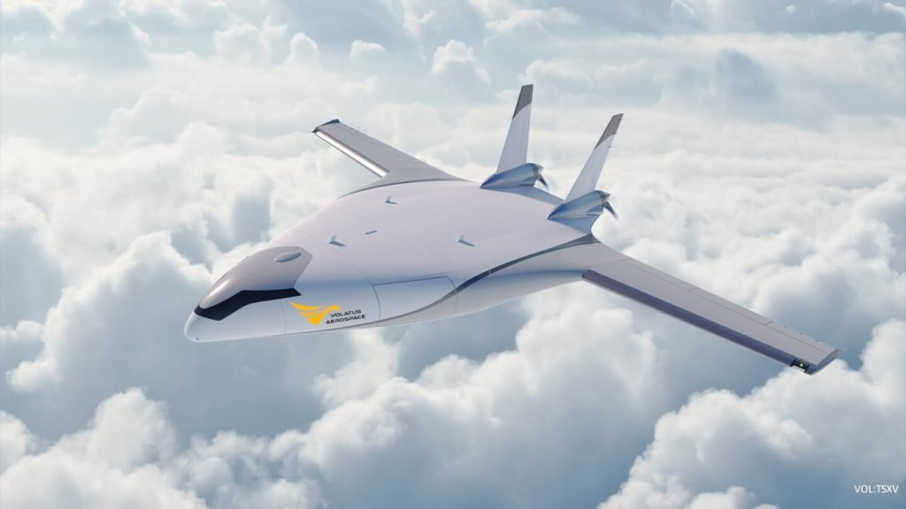

ဒီ ကုန်တင်လေယာဉ် သစ်ဟာ ထူးခြားတဲ့ တောင်ပံပုံ ကိုယ်ထည်ဒီဇိုင်းကို အသုံးပြု ထားပြီး ကုန်ကျ စားရိတ် သက်သာစွာနဲ့ ကုန်ပစ္စည်း တွေကို တစ်နေရာက တစ်နေရာကို လျှင်လျှင်မြန်မြန် ပို့ဆောင် ပေးနိုင်လိမ့်မယ်လို့ ဆိုပါတယ်။
အခု တောင်ပံပုံ ကိုယ်ထည် ဒီဇိုင်းဟာ အသစ်အဆန်းတော့ မဟုတ်ပါဘူး။ နာဆာရဲ့ X-48 စမ်းသပ် လူစီးလေယာဉ် မှာလဲ ဒီလိုပဲ တောင်ပံပုံ ကိုယ်ထည်နဲ့ တည်ဆောက်ထားတာ ဖြစ်ပါတယ်။ အခု ကုန်တင်လေယာဉ်မှာ ဒီလို ကိုယ်ထည်ကို တောင်ပံပုံ ပြုလုပ်ထားတဲ့ အတွက် လေပင့်အား ပိုမို ကောင်းမွန်မယ်လို့ ဆိုပါတယ်။
ဒါ့အပြင် လေယာဉ်ကိုယ်ထည် အရွယ် ကြီးလာတာမို့ ကုန်တင်ဆောင်နိုင်တဲ့ ပမာဏလဲ ၆၀% လောက် ပိုများလာမှာ ဖြစ်ပါတယ်။ ဒါ့ကြောင့် ကုန်ပစ္စည်း ကီလိုချိန်နဲ့ တွက်မယ်ဆို တစ်ကီလို အပေါ် ကျသင့်မယ့် ကုန်ကျစားရိတ်ဟာ သာမန် လေယာဉ်တွေနဲ့ သယ်ဆောင်တာထက် တစ်ဝက်လောက်ပဲ ကုန်ကျမှာ ဖြစ်တယ်လို့ ဆိုပါတယ်။
Natilus ရဲ့ ပထမဆုံး ထုတ်လုပ်မယ့် လောယာဉ် မော်ဒယ်ကို N3.8T လို့ အမည် ပေးထားပါတယ်။ ဒီ လေယာဉ်ဟာ ကုန်ပစ္စည်း အလေးချိန် ၃,၈၅၅ ကီလို (၈,၅၀၀ ပေါင်) ကို သယ်ဆောင်ပြီး အကွာအဝေး ၁၀၃၅ မိုင်အထိ ပျံသန်း နိုင်မယ်လို့ ဆိုပါတယ်။
လက်ရှိမှာတော့ ပုံစံငယ်ကို လေအား ဥမင်လှိုင်ခေါင်း (Wind tunnel) ထဲမှာ စမ်းသပ်ပျံသန်းမှု နှစ်ကြိမ် ပြုလုပ်ပြီးစီး ခဲ့ပြီလို့ ဆိုပါတယ်။ ဒီ စမ်းသပ် မော်ဒယ်ဟာ အင်ဂျင်နှစ်လုံးတပ် အမျိုးအစား ဖြစ်ပြီး ၂၀၂၅ လောက်မှာ စတင် ထုတ်လုပ်နိုင်မယ်လို့ ဆိုပါတယ်။
ကုန်ကျစားရိတ် ထက်ဝက် သက်သာမယ်
နာဆာက စမ်းသပ်ခဲ့တဲ့ X-48 လေယာဉ် လိုပဲ အခု လေယာဉ်ကိုလဲ ဆီစား သက်သာတဲ့ တောင်ပံပုံ ကိုယ်ထည်နဲ့ ပုံမှန် တောင်ပံ နှစ်ခု ပေါင်းစပ်ထားတဲ့ ဒီဇိုင်းကို အသုံးပြု ထားပါတယ်။ ဒီလို ဆီစား သက်သာတဲ့ အတွက် ကာဗွန်ဒိုင် အောက်ဆိုဒ် ထွက်တာလဲ လျော့နည်းမယ်လို့ ဆိုပါတယ်။ လေယာဉ် ကိုယ်ထည် အရွယ် ကြီးမားတာကလဲ ကုန်ပိုသယ်နိုင်တာမို့ လေယာဉ် ပျံသန်းစားရိတ်ကို သက်သာ စေပါတယ်။လေယာဉ်နဲ့ သယ်ဆောင်ခ တစ်ဝက် သက်သာ သွားမှာမို့ သန့်ရှင်းလတ်ဆတ်တဲ့ အသီးအနှံ နဲ့ သားငါးတွေလဲ ပိုပြီး ဈေးကွက်ကို မြန်မြန် ဆန်ဆန် ရောက်လာမှာ ဖြစ်ကြောင်း၊ ဒါ့ကြောင့် နယ်စပ်ဖြတ်ကျော် ကုန်သွယ်မှု တွေလဲ ပိုမို မြန်ဆန် သွက်လက်လာ ကြမယ်၊ ဒီကတဆင့် ဖွံဖြိုးမှု နောက်ကျတဲ့ ဒေသတွေရဲ့ ဖွံ့ဖြိုးရေး ကိုလဲ အထောက်အပံ့ ဖြစ်စေမယ်လို့ ဒီ ကုမ္ပဏီရဲ့ အမှုဆောင် အရာရှိချုပ် အလက်ဆီ မက်ယူရှက်ဗ် (Aleksey Matyushev) က ပြောပါတယ်။
ဒီ ကုမ္ပဏီရဲ့ ရည်ရွယ်ချက် ကတော့ လက်ရှိ ပထမ အဆင့်မှာ ကုန်ပစ္စည်း အရွယ် အစား အငယ်စားတွေကို ဈေးနှုန်း သက်သာစွာနဲ့ စတင် ပို့ဆောင်ပေးဖို့ ဖြစ်ပါတယ်။ တချိန်တည်း မှာပဲ ပိုမိုကြီးမားတဲ့ လေယာဉ်ကြီးတွေ ကိုလဲ ဆက်လက်ပြီး ထုတ်လုပ်သွားမယ်လို့ ဆိုပါတယ်။
ကုမ္ပဏီရဲ့ အဆိုအရ အကွာအဝေး မိုင် ၅,၁၁၂ မိုင် အထိ ပျံသန်းနိုင်မယ့် လူမဲ့ ကုန်တင် လေယာဉ် ကြီးတွေထိ ထုတ်လုပ်ဖို့ ဒီဇိုင်းဆွဲနေတယ်လို့ ဆိုပါတယ်။

ဒီလို ဆီစား သက်သာတဲ့ ကုန်တင်လေယာဉ်တွေ ထုတ်လုပ်ဖို့ ကြိုးစား နေတာက Natilus တစ်ခုတည်းတော့ မဟုတ်ပါဘူး။ ဥပမာ ဘိုးအင်း လေယာဉ် ကုမ္ပဏီ ကြီးက ဆီစား ၂၅% သက်သာတဲ့ Boeing 777-8 Freighter ကုန်တင်လေယာဉ်ကို စမ်းသပ်နေတယ်လို့ သတင်း ထုတ်ပြန် ခဲ့ပါတယ်။
လေကြောင်း လုပ်ငန်းတွေရဲ့ ကာဗွန်ဒိုင် အောက်ဆိုဒ် ထုတ်လုပ်မှု ကြီးမားတာကို ဝေဖန်မှုတွေ မြင့်တက် လာနေတာကြောင့် လေကြောင်း လုပ်ငန်းတွေဟာ ဒီ ကာဗွန် ပြဿနာကို အဖြေရှာဖို့ ကြိုးစားနေ ကြပါတယ်။ အခု ဆီစားသက်သာတဲ့ ကုန်တင်လေယာဉ် ဒီဇိုင်းတွေဟာ နောင်အနာဂတ် လေကြောင်းကုန်စည် သယ်ဆောင်ရေးကို အများကြီး အပြောင်းအလဲ ဖြစ်စေမယ်လို့ လေ့လာသူ တွေက သုံးသပ်ကြပါတယ်။
Reference: Natilus freight drone’s blended wing design packs in 60% more cargo | New Atlas